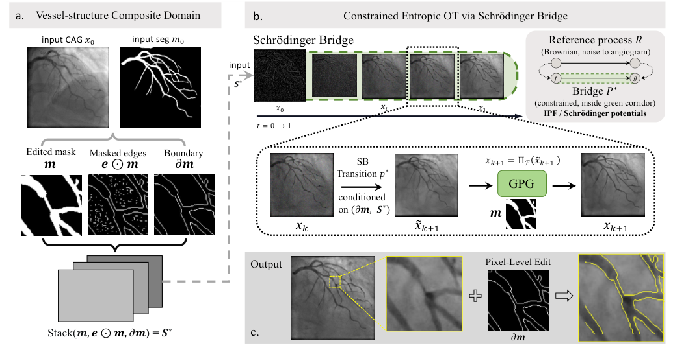
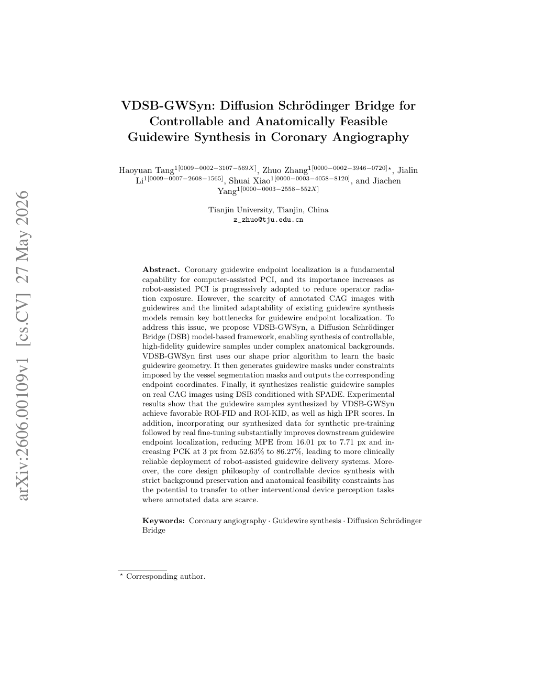
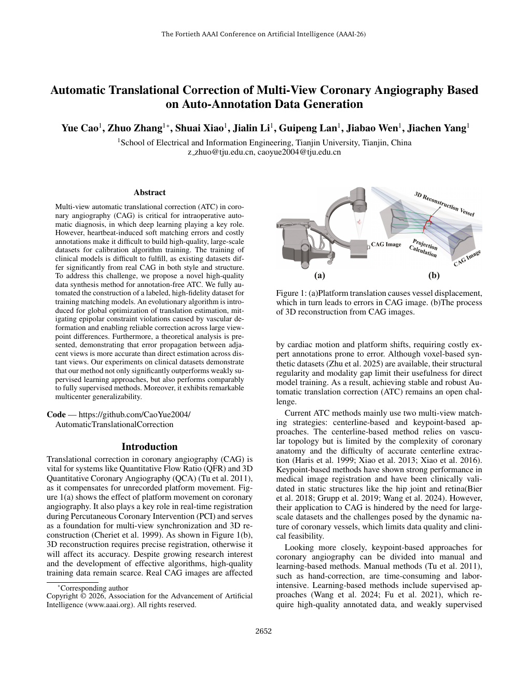
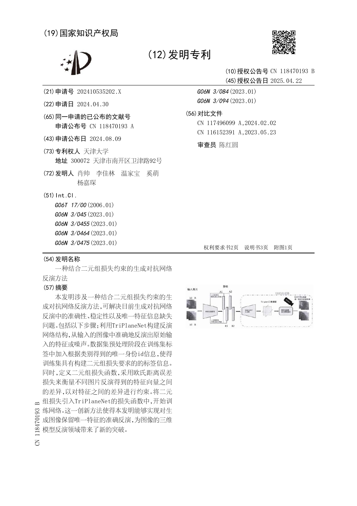

OT-Bridge Editor was accepted to ICML 2026 and released on arXiv.
PhD Student · Tianjin University · 李佳林
Jialin Li
I work on synthetic data and generative modeling for data-scarce medical imaging, with a focus on controllable image editing, diffusion Schrodinger bridges, optimal transport, and downstream task enhancement across medical AI settings.
- ICML 2026
- First-author paper on OT-Bridge Editor
- AAAI 2026
- Auto-annotation data generation for image registration
- MICCAI 2026
- Early accepted controllable device synthesis work
Updates
Recent News
VDSB-GWSyn was early accepted to MICCAI 2026 and released on arXiv.
Automatic Translational Correction of Multi-View CAG appeared in AAAI 2026.
A Chinese invention patent on tuple-loss constrained GAN inversion was granted.
Research
Research Interests
My research centers on controllable synthetic data for data-scarce medical imaging, aiming to make downstream medical AI models more robust when high-quality annotations are limited or expensive.
Medical Synthetic Data
Generating high-fidelity medical images, lesion-like variations, device samples, and training pairs for scarce-data tasks.
Geometry-Constrained Generation
Editing vascular structures with pixel-level boundary control and preservation of non-target anatomy.
Diffusion, OT, and Bridges
Using optimal transport and diffusion Schrodinger bridge formulations for path-level generative control.
Model Evaluation
Assessing model information discrepancy and interpretability through dataset-independent visual signals.
Publications
Selected Publications
Geometrically Constrained Stenosis Editing in Coronary Angiography via Entropic Optimal Transport
Proposes OT-Bridge Editor, a geometry-constrained medical image editing framework validated on angiographic lesion synthesis. Synthetic data improves downstream detection by 27.8% on ARCADE and 23.0% on a multi-center clinical dataset.
Automatic Translational Correction of Multi-View Coronary Angiography Based on Auto-Annotation Data Generation
Develops annotation-free data synthesis and robust multi-view translational correction, supporting large-scale high-fidelity matching pair generation and multi-center generalization.
VDSB-GWSyn: Diffusion Schrodinger Bridge for Controllable and Anatomically Feasible Guidewire Synthesis in Coronary Angiography
Builds a DSB-based controllable device synthesis framework with shape priors, anatomical constraints, endpoint labels, and background preservation. Synthetic pre-training plus real fine-tuning reduces endpoint MPE from 16.01 px to 7.71 px.
DD-MID: An Innovative Approach to Assess Model Information Discrepancy Based on Deep Dream
Introduces a dataset-independent method for measuring model information discrepancy, supporting model comparison, active learning, incremental evaluation, and interpretability analysis.
Work
Research Projects and Patent
The projects below connect method development with clinical downstream tasks: detection, localization, registration, and controllable image-label synthesis.

First-author project · ICML 2026
OT-Bridge Editor
Geometry-constrained medical image editing, including method derivation, experiments, ablations, cross-dataset evaluation, paper writing, and open-source preparation.

Collaborative project · MICCAI 2026
VDSB-GWSyn
Controllable interventional-device synthesis with anatomical feasibility constraints, image-label generation, and downstream endpoint localization enhancement.

Collaborative project · AAAI 2026
Annotation-Free Multi-View Correction
High-fidelity auto-annotation data generation and robust translation estimation for multi-view medical image registration scenarios.

Authorized invention patent · CN 118470193 B
Tuple-Loss Constrained GAN Inversion
Introduces tuple loss into TriPlaneNet inversion to improve accuracy, stability, and identity-specific feature preservation in generative model inversion.
Background
Education and Experience
PhD Student, Information and Communication Engineering
Tianjin University. Research on generative medical imaging, synthetic data augmentation, and data-efficient medical AI.
B.Eng. in Communication Engineering
Tianjin University. Built an engineering foundation through mobile application development before moving into deep learning and medical image generation.
Mobile Team Lead, Tianwaitian Studio
Led iOS and Flutter maintenance, release work, feature development, and technical training for the WePeiyang app.
Contact
Open to Research Collaboration
I am interested in collaborations on medical image synthesis, controllable generation, synthetic data evaluation, and data-efficient downstream learning.